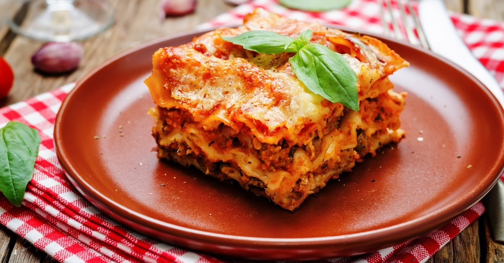

Yemek Tarifi - Lazanya

Malzemeler
İç harcı için;
- 400 gr kıyma
- 3 yemek kaşığı sıvı yağ
- 2 adet kuru soğan
- 2 adet domates
- 2 yemek kaşığı domates salçası
- 2 diş sarımsak
- 1 tatlı kaşığı tuz
- 1,5 su bardağı sıcak su (300 ml)
Başemal sosu için;
- 2 yemek kaşığı tereyağı
- 3 su bardağı süt (600 ml)
- Yarım su bardağı un
- 1 çay kaşığı tuz
- Yarım çay kaşığı karabiber
Üzeri için;
- 1 su bardağı kaşar peyniri rendesi
Yapılış
Lazanya Tarifi Nasıl Yapılır?
- İç harcı için geniş bir tavaya sıvı yağı alalım.
Küçük küçük doğradığımız soğanları ilave edelim,
biraz kavurduktan sonra üzerine kıymayı
ilave ederek kavurmaya devam edelim.
- Kıymalar yeterince kavrulunca doğradığımız
sarımsakları ve kabuğunu soyup
doğradığımız domatesleri de ilave
edelim ve orta ateşte 5 dakika
kadar daha soteleyelim.
- Üzerine salçayı ve tuzu ekleyerek kavuralım.
- Ardından suyunu ekleyelim ve iç harcımız
suyunu çekene kadar kısık ateşte pişmeye bırakalım.
- Beşamel sosu için tereyağı ve unu küçü
bir tencereye alalım ve orta ateşte kavurun.
- .......
- .......
- .......
- .......
- .......
- .......
- .......
- .......
- .......
- .......